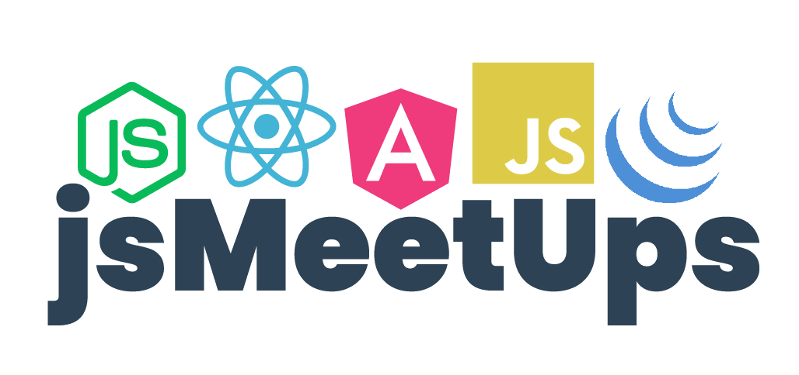
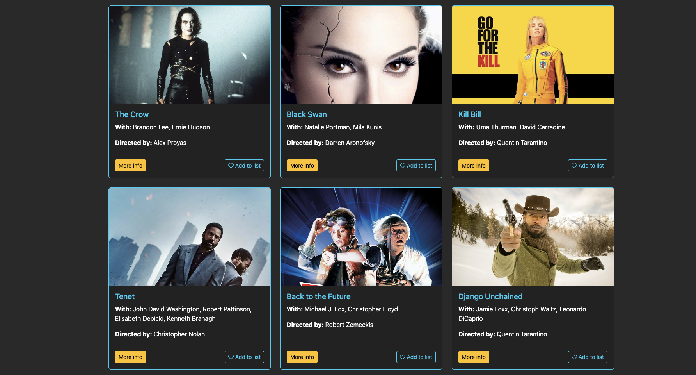
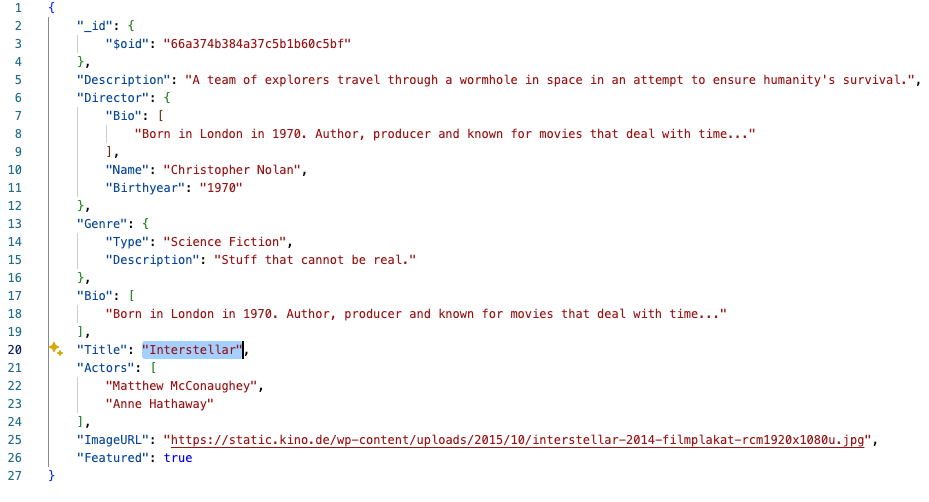
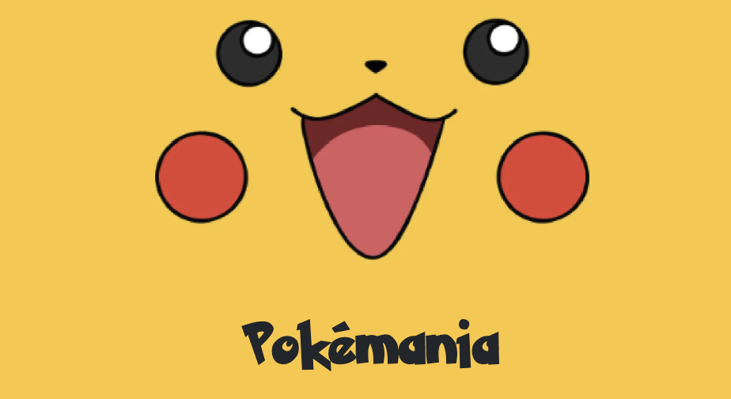
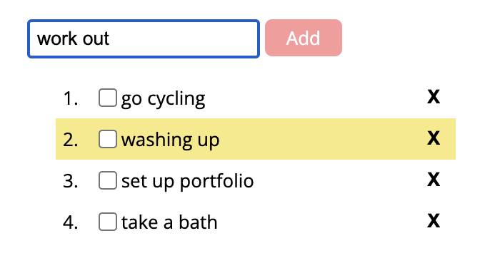
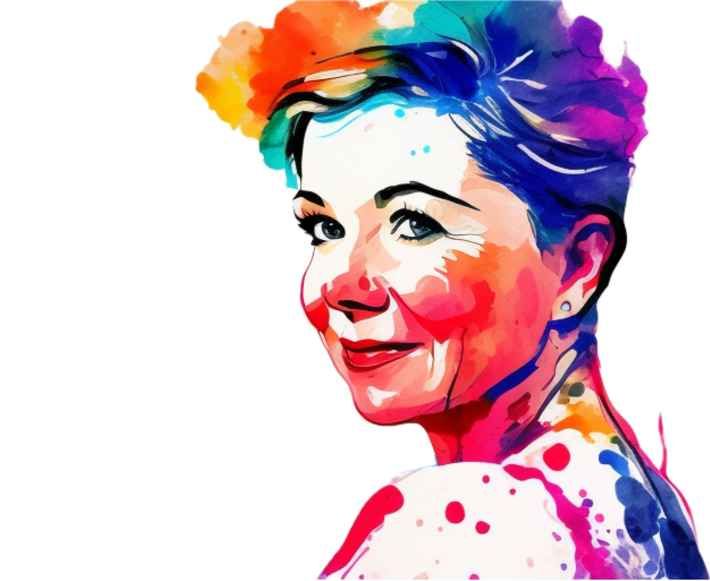

is a full-stack MEAN app (built with MongoDB for an API; Express, Angular and Node.js) showcasing skills in
database setup,
REST API development, and frontend SPA creation with Angular.
The app features user authentication, movie
browsing, favoriting, and profile management and is basically a twin to the project setup with the MERN stack. More Info
A small chat app for multiple users built with ReactNative for use with iOS and Android, using Expo for building and iOS/ Android emulators and simulators for testing. The app features a
welcome screen where users can enter their name and choose a background color for the chat screen, with the
ability to send and receive messages in real-time - including sending images from their phone’s library and
taking pictures with the camera.
It is also possible to send their geolocation. More Info

MeetUp Review
(React / AWS / Google)
This is a serverless, progressive web app built with REACT (CRA) that displays a list of upcoming
Meetup events,
pulling data from Google Calendar via the Google API.
Users can filter events by
city, view/hide event
details, specify the number of events, access the app offline, and add a shortcut to their device’s home
screen, with the app requiring Google Authentication for use. More Info

Movie Database APP
(Stack: MERN)
is a full-stack MERN app, showcasing skills in database setup,
REST API development, and frontend SPA creation with ReactJS.
The app features user authentication, movie
browsing, filtering, favoriting, and profile management, with plans to expand functionality to include
watchlists, movie sharing, and enhanced API documentation. More Info

Movie Database API
(MongoDB, Express)
is a backend for the movie databases. It is a RESTful API built with Node.js, Express, and MongoDB, showcasing
skills in database setup, REST API development, and user authentication. The API features endpoints for user
registration, login, user updates, favouriting movies as well as movie browsing search. I also created the API documentation using Swagger and noted down the JS code with JSDoc. More Info

Pokedex (Javascript, Bootstrap)
is a web-based Pokédex (an encyclopedia of Pokémon) utilizing HTML Bootstrap(for styling), and
JavaScript to display Pokémon data from an external/ public Rest API.
The app currently presents a list of Pokémon names,
with modals that open on being clicked to show detailed information on each Pokémon. More Info

Simple ToDo List (jQuery - JS)
This is a simple to-do list app built with jQuery, allowing users to add tasks, mark them as completed, or
delete them. Features include drag-and-drop reordering, checkboxes to mark tasks with a green stroke, and the
ability to double-click tasks to mark them as irrelevant with a grey stroke.

Portfolio Website (HTML, Bootstrap for CSS)
We first learned the basics of HTML and CSS, quickly looking into SCSS and small JavaScript projects. This page was created to showcase the acquired skills in the form of a portfolio and help get noticed as a developer.
Relevant creative works
Employer
Years
Relevant Creative work
Atlantic Labs / FoodLabs
2024 - 2019
Using no-code front end tools such as Softr, Carrd to create online presences and
Wikis;
Using Airtable as backend.
Leading a Re-branding project with an design agency including a website built with
Contentful, Netlify and Github
Contentful
2019 - 2017
Helping to buildout the company Wiki on Confluence / Atlassian.
Rolling out / Implementing a global signing policy and procedure including digital
signing
tool Docusign
Leading the Workplace team using Agile Working principles and building agile / new
work
office space.
SoundCloud
2017 - 2014
Using Google Script to prepare the biweekly Sprint notes of the Engineering Team.
Creating animated Google Slides presentations around the founders’ vision and
setting up
Infographics in Adobe Illustrator and MS Powerpoint
24-7 Entertainment
2014 - 2011
Re-design of the company company website in Dreamweaver using HTML, CSS &
Javascript
Re-designing the quarterly corporate newsletter in HTML and creating the editorial
for each
issue
Designing the layout JUKE HTML newsletter and setting it up for bi-weekly sendout
LCM Oil & Gas
2011 - 2003
Creating various websites coding HTML and CSS in Dreamweaver for the group of
companies
operating in the MENA region
Setting up a webshop with a payment integration (Worldpay) for a hotel in
Tripoli,
Libya